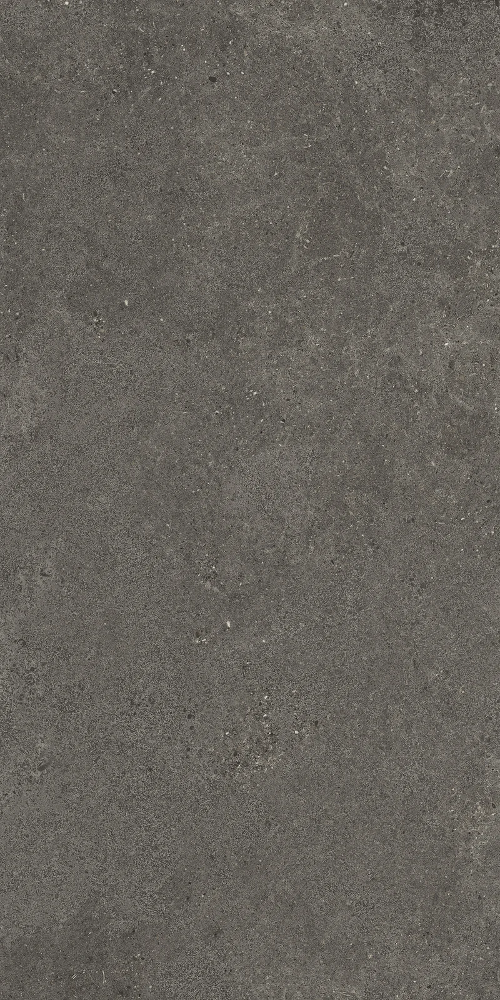
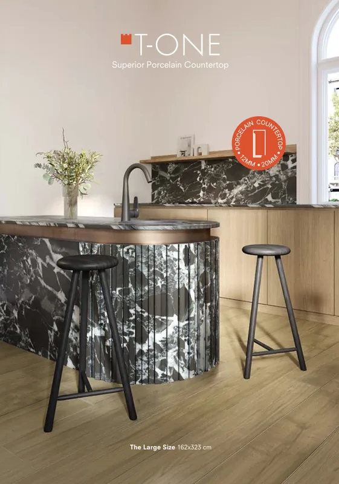

KALEBODUR / KOLEKSİYON
Kalebodur Kataloğu
Seramik karo ve yüzey koleksiyonlarının üretici kataloğu.
Doğanın kalıcılığı, Bekamar'ın imzası.

BEKAMAR / SERAMİK VE PORSELEN YÜZEYLER
T-ONE porselen tezgâhları, Kalebodur seramik ve büyük ebatlı yüzeyleri, Kale banyo tasarımları. Koleksiyonları ve ürün bilgilerini Bekamar’da keşfedin.
Markaları keşfedin
BEKAMAR / MARKA ARŞİVİ
T-ONE, Kale ve Kalebodur ürünlerini görsel ve teknik özellikleriyle inceleyin.
T-ONE / PORSELEN TEZGÂH
T-ONE porselen tezgâhları Kalebodur porselen plakadan üretilir. Üretici dokümanında 12 mm nominal kalınlık ve 160 × 320 cm rektifiyeli ebat belirtilir; projede güncel ürün belgesini kontrol edin.
Koleksiyon şu anda yüklenemiyor. Lütfen sayfayı yenileyin.

KALE / KALEBODUR / TEKNİK KAYNAKLAR
Üreticinin yayımladığı katalogları bu sayfadan açın. Kale ürün çizimleri ilgili ürün detaylarında bulunur.
KALEBODUR / KOLEKSİYON
Seramik karo ve yüzey koleksiyonlarının üretici kataloğu.
KALEBODUR / TEKNİK VE UYGULAMA
Büyük ebatlı porselen plakalar için teknik ve uygulama dokümanı.
KALE / BANYO
Kale banyo ürün gruplarını içeren üretici kataloğu.
KALE / LAVABO
Lavabo ürün seçenekleri ve üretici katalog içeriği.
KALEBODUR / 120 × 280 CM
Kalebodur’un 120 × 280 cm koleksiyon seçkisi. Kalınlık ve kullanım bilgilerini her ürünün teknik tablosundan kontrol edin.
Ön izlemeler Kale’nin resmî katalog görüntüleyicisinden bu sayfa içinde yüklenir. Katalog portalında PDF indirme seçeneği bulunmayan yayınlar, indirme bağlantısı gibi gösterilmez.
T-ONE / TASARIM VE MALZEME
Marka, tasarım ve teknik bilgileri; ihtiyaç duyduğunuzda açabileceğiniz başlıklarda.
T-ONE / T-ONE MARKA HİKÂYESİ
T-ONE, Türkiye merkezli bir yüzey markası olarak modern mimarinin estetik ve işlevsel ihtiyaçlarına yönelik ürün seçenekleri sunar.
Günümüzde mimari yüzeyler yalnızca mekânları kaplayan malzemeler değildir. Renk, doku, desen ve yüzey karakteriyle mekânın bütün atmosferini belirleyen önemli tasarım unsurlarıdır.
T-ONE koleksiyonları da bu anlayışla farklı mimari stillere uyum sağlayabilecek yüzey alternatifleri sunmayı hedefler. Doğal taş görünümlerinden sade ve çağdaş tasarımlara uzanan seçenekler, yaşam alanlarında bütünlüklü bir tasarım dili oluşturulmasına yardımcı olur.
Yerli bir marka olması, T-ONE'u Türkiye'de mimari yüzey alternatiflerini değerlendiren kullanıcılar ve profesyoneller için dikkate değer seçeneklerden biri haline getirir.
T-ONE / T-ONE VE BEKAMAR
Bekamar, doğal taş ve mimari yüzeyler alanındaki ürün portföyünde T-ONE koleksiyonlarına da yer verir.
Mimarlar, iç mimarlar, mermer işleme profesyonelleri ve proje sahipleri, Bekamar aracılığıyla T-ONE ürünlerinin görsel özellikleri, renk seçenekleri ve kullanım alanları hakkında bilgi edinebilir.
Doğru yüzeyin seçilmesinde yalnızca renk ve desen değil, ürünün kullanılacağı alan, yüzey bitişi, ölçü ve uygulama gereksinimleri de önemlidir.
Bekamar, ürün seçimi sürecinde müşterilerine mevcut koleksiyonlar ve ürün alternatifleri hakkında bilgi sunar.
T-ONE ürünlerinin stok ve tedarik durumu, seçilen ürüne ve sipariş koşullarına göre değişebilir.
Profesyonel alıcılar, güncel ürün uygunluğu ve fiyat bilgisi için Bekamar ile iletişime geçebilir. Kesim, işçilik ve uygulama süreçleri ise ilgili mermerci veya uygulama firması tarafından yürütülür.
T-ONE / T-ONE KOLEKSIYONLARI VE TASARIM SEÇENEKLERI
Doğal taşın kendine özgü damar yapıları, renk geçişleri ve görsel derinliği, mimari tasarımlarda güçlü bir etkiye sahiptir.
T-ONE'un doğal taş estetiğini yansıtan ürün seçenekleri, bu görünümü çağdaş mekânlara taşımak isteyenler için değerlendirilebilir.
Mermer estetiği, hem klasik hem modern iç mekânların öne çıkan tasarım tercihlerindendir.
Açık tonlar ferah ve yalın bir atmosfer oluştururken, koyu renkler ve belirgin damar desenleri daha güçlü bir görsel karakter yaratabilir.
Modern mimaride kullanılan sade yüzeyler, özellikle minimalist ve endüstriyel tasarım anlayışlarıyla uyumludur.
Beton etkili ve nötr tonlu ürün alternatifleri, mekândaki mobilya, aydınlatma ve diğer malzemelerin ön plana çıkmasına yardımcı olabilir.
Bir yüzeyin görünümü, rengi kadar dokusu ve ışıkla kurduğu ilişkiye de bağlıdır.
Mat, parlak veya farklı dokusal özelliklere sahip ürünler, mekânın genel tasarımını farklı biçimlerde etkileyebilir. Mevcut yüzey bitişleri ve ölçüler, seçilen T-ONE ürününe göre değerlendirilmelidir.
T-ONE / T-ONE TEKNIK ÖZELLIKLERI
Porselen yüzeyler, mineral esaslı hammaddelerin endüstriyel üretim süreçleriyle işlenmesi sonucunda elde edilen mimari kaplama malzemeleridir.
Ürünlerin teknik performansı; üretim yöntemi, kalınlık, yüzey bitişi ve kullanım koşulları gibi faktörlere bağlıdır.
Yüzey ölçüleri, özellikle mutfak tezgâhları, geniş duvar kaplamaları ve büyük ölçekli mimari projelerde tasarım bütünlüğünü etkiler.
T-ONE ürünlerinin mevcut ebat ve kalınlık seçenekleri koleksiyona göre değişebilir. Projelendirme öncesinde ilgili ürünün güncel teknik dokümanları kontrol edilmelidir.
Porselen malzemeler, genel olarak düşük su emme özellikleri ve günlük kullanıma uygun yüzey performansları nedeniyle tercih edilir.
Bununla birlikte leke, çizilme, darbe ve kimyasal maddelere karşı dayanım her üründe aynı değildir. Özellikle yoğun kullanıma açık alanlarda ürünün teknik değerleri ve üretici tavsiyeleri dikkate alınmalıdır.
Porselen yüzeylerin ısıya karşı davranışı ürünün teknik özelliklerine ve uygulama koşullarına bağlıdır.
Mutfak gibi sıcaklık değişimlerinin yaşandığı alanlarda, doğrudan sıcak nesne teması ve ani sıcaklık değişimleri konusunda üreticinin kullanım talimatlarına uyulmalıdır.
Porselen yüzeylerin günlük temizliğinde genellikle yumuşak bir bez, su ve yüzeye uygun temizlik ürünleri tercih edilir.
Aşındırıcı temizlik ekipmanlarından ve üretici tarafından önerilmeyen kimyasallardan kaçınılmalıdır. Uzun ömürlü kullanım için seçilen ürünün bakım talimatları esas alınmalıdır.
T-ONE / T-ONE KULLANIM ALANLARI
Mutfaklarda tezgâh, ada ve duvar yüzeylerinin birbiriyle uyumlu olması bütünlüklü bir tasarım oluşturur.
Uygun teknik özelliklere sahip T-ONE ürünleri, modern mutfak projelerinde değerlendirilebilir. Tezgâh uygulamalarında seçilen ürünün kalınlığı, kenar detayları ve taşıyıcı sistem gereksinimleri kontrol edilmelidir.
Banyolarda yüzey seçimi, mekânın görünümünü ve kullanım konforunu etkiler.
Duvar ve diğer uygun yüzeylerde tercih edilen porselen tasarımlar, sade veya dikkat çekici banyo konseptleri oluşturulmasına yardımcı olabilir.
Geniş yüzeylerde renk ve desen devamlılığı, mimari tasarımın önemli unsurlarındandır.
T-ONE koleksiyonları, ürünün teknik uygunluğuna bağlı olarak farklı iç mekân kaplama projelerinde değerlendirilebilir.
Porselen görünümlü mimari yüzeyler, mobilya tasarımında da estetik bütünlük oluşturmak amacıyla tercih edilebilir.
Masa ve mobilya uygulamalarında ürünün ağırlığı, kalınlığı, destek sistemi ve işleme gereksinimleri dikkate alınmalıdır.
Oteller, ofisler, mağazalar ve diğer ticari alanlarda kullanılan yüzeyler, mekânın kimliğini doğrudan etkiler.
T-ONE'un tasarım alternatifleri, proje gereksinimleriyle uyumlu ürünlerin seçilmesi koşuluyla bu tür mekânlarda değerlendirilebilir.
T-ONE / NEDEN T-ONE?
T-ONE, Türkiye merkezli bir marka olarak mimari yüzey seçenekleri arasında yer alır.
Farklı renk ve desen karakterleri, çağdaş ve klasik tasarım yaklaşımlarına uygun yüzey seçimleri yapılmasına yardımcı olabilir.
Mermer, taş ve diğer doğal malzemelerden ilham alan görünümler, mekânlara farklı bir görsel kimlik kazandırabilir.
Uygun ürün seçimiyle mutfak, banyo, duvar ve mobilya tasarımlarında ortak bir renk ve malzeme dili oluşturulabilir.
Bekamar, T-ONE ürünlerini incelemek ve proje ihtiyaçlarına uygun alternatifler hakkında bilgi almak isteyen müşterilerine ürün portföyü üzerinden destek sunar.
T-ONE / T-ONE HAKKINDA SIK SORULAN SORULAR
Evet. T-ONE, Türkiye merkezli yerli bir yüzey markasıdır.
Bekamar'ın T-ONE ürün sayfasından mevcut ürün görsellerini ve koleksiyon seçeneklerini inceleyebilir, daha fazla bilgi için Bekamar ile iletişime geçebilirsiniz.
Kullanım alanları ürünün teknik özelliklerine bağlıdır. Uygun ürünler mutfak, banyo, duvar kaplaması ve farklı mimari uygulamalarda değerlendirilebilir.
Tezgâh uygulaması için uygun olduğu belirtilen ürünler kullanılabilir. Kesim, kenar işleme, montaj ve taşıyıcı sistem gereksinimleri uygulamayı gerçekleştiren profesyonel tarafından değerlendirilmelidir.
Ebat ve kalınlık seçenekleri ürün ve koleksiyona göre değişebilir. Güncel ölçüler için ürün teknik dokümanları incelenmelidir.
Profesyonel alıcılar, güncel fiyat ve stok bilgisi için Bekamar ile iletişime geçebilir. Son kullanıcılar ise kesim, işçilik ve uygulama dahil toplam maliyeti kendi mermercilerinden öğrenebilir.
Hayır. Bekamar ürün tedariki konusunda hizmet verir; kesim ve montaj işlemleri ilgili uygulama firmaları tarafından gerçekleştirilir.
Günlük temizlikte ürünün yüzeyine uygun, aşındırıcı olmayan temizlik yöntemleri tercih edilmelidir. Üreticinin bakım talimatları esas alınmalıdır.
T-ONE × BEKAMAR
Modern mimari yüzey seçeneklerini incelemek, farklı renk ve desenleri karşılaştırmak ve projeniz için uygun ürünler hakkında bilgi almak için Bekamar'ın T-ONE ürün koleksiyonunu keşfedin.
Ürün uygunluğu, stok ve profesyonel sipariş süreçleri hakkında bilgi almak için Bekamar ile iletişime geçebilirsiniz.